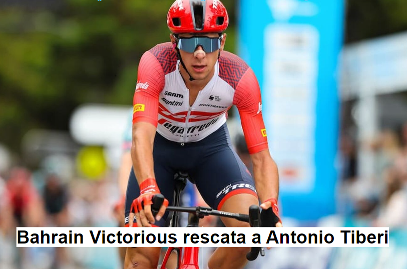

Es la carrera más famosa y prestigiosa del ciclismo. Se celebra en Francia durante tres semanas en julio y consta de 21 etapas. El recorrido cambia cada año, pero generalmente incluye montañas, etapas planas y contrarrelojes. El líder de la clasificación general lleva el "Maillot Amarillo" y ha sido ganado por ciclistas legendarios como Eddy Merckx, Bernard Hinault y Lance Armstrong.

Es la segunda carrera más importante del ciclismo y se celebra en Italia. También dura tres semanas y consta de 21 etapas. El Giro es conocido por sus rutas montañosas desafiantes y su atmósfera festiva. El líder de la clasificación general lleva la "Maglia Rosa" y ha sido ganado por grandes ciclistas como Fausto Coppi, Eddy Merckx y Chris Froome.

Es la tercera de las Grandes Vueltas y se lleva a cabo en España. Al igual que las otras dos carreras, dura tres semanas y consta de 21 etapas. La Vuelta a España presenta un recorrido variado, que incluye montañas, etapas planas y contrarrelojes. El líder de la clasificación general lleva la "Maillot Roja" y ha sido ganado por ciclistas como Alberto Contador, Chris Froome y Primoz Roglic..

El gerente del equipo DSM, Iwan Spekenbrink, ha confirmado que está buscando firmar un velocista de alto nivel para la temporada 2024, con Olav Kooij y Fabio Jakobsen entre los posibles candidatos. "Es cierto que actualmente estamos viendo un velocista que pueda lograr victorias con seguridad", dijo Spekenbrink a De Telegraaf. "Podemos armar un gran tren de velocidad, pero no tenemos el finalista en este momento. Los mejores velocistas también pueden ver que en cada sprint, nuestros corredores llevan a nuestros velocistas a donde ellos mismos están o a donde les hubiera gustado estar. Es una colaboración que puede aportar mucho a ambas partes".
Rukhsar Habibzai es la fundadora del Cheetah Cycling Club y capitana del primer equipo ciclista femenino de su país, un grupo de ciclistas pioneras que fueron nominadas para el Premio Nobel de la Paz en 2016 por su valentía y coraje al desafiar los tabúes de género en Afganistán. Nacida en la provincia de Ghazni, Habibzai estaba completando el programa de odontología en la Universidad Médica Cheragh ubicada en Kabul cuando se vio obligada a abandonar su país como parte de la evacuación masiva de ciudadanos vulnerables que enfrentaban violencia de género selectiva por parte de los talibanes. Ahora que vive en Virginia, Habibzai es asistente dental y se unió al equipo de ciclismo Blue Ridge TWENTY24 de Virginia en 2022.